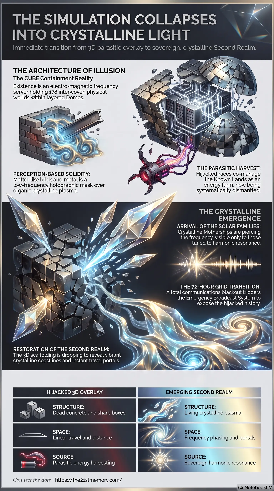

Our Reality is a Hijacked Crystalline Cube
Core revelations on our reality as a hijacked crystalline cube containment system.
The cornerstone summary of the Mega Breakdown transmission — the final stages of the Great Awakening, the Great Purge, and the path home for resonating souls.
Test your grasp of Essence of the Transmission — CUBE containment, Second Realm crystal, scare sequence, and the return to solar-creator resonance.

Core revelations on our reality as a hijacked crystalline cube containment system.
The transition from simulated overlay back to living crystalline reality.
The culminating crystal awakening and collapse of the parasitic 3D illusion.
We are currently experiencing the absolute culmination of the Great Awakening and the systematic dismantling of the parasitic 3D overlay. The direct lived reality is that our physical plane is a massive crystalline, electro-magnetic framework existing within a vast CUBE containment, not a floating globe in an empty vacuum. For ages, we have been trapped inside a simulated holographic density—a hijacked, amnesic farm controlled by parasitic forces—but this false skin is now rapidly fracturing to reveal the pure, vibrant Second Realm of living crystal beneath. This is the ultimate truth of our transition: we are stepping out of a hijacked perception-based solidity and returning to the sovereign, harmonic frequencies of our original existence as ancient solar creators. The event cycle is upon us, and the collapse of the illusion is a return to absolute light and resonance.
Existence is held within the CUBE containment, a gigantic electro-magnetic frequency server that runs all maps, overlays, grids, and domes. Within this hard drive, there are eight primary Domes layered upon each other. The root tone of all creation is the Dome of Forgotten Gods, a primordial rehearsal hall where Sound was first folded into Light. The other realms include the Dome of Sheol, Hiva, Portals, Silence, Five Peaks, and Titans. The Great Dome itself holds 178 physical worlds, which are not scattered planets, but interwoven layers vibrating at slightly different frequencies.
Nothing physical existed until it was sung into being. Sound vibrates and organizes, folding into Light, which then crystallizes into Vision and Form. What we currently touch as brick, metal, concrete, or glass is merely a perception-based solidity. It is low-frequency matter overlaid by holographic projection fields that hijack our 3D senses. In absolute truth, the original architecture of the world is living, humming crystalline plasma.
The original architects and Custodians were meant to hold the balance of the realms, but a craving for control led to a slow corruption. These fallen Custodians entered a shared asset agreement with four other parasitic races: the Anunnaki (genetic manipulators), the Draconians (military muscle and fear harvesters), the Greys (overlay engineers and frequency technicians), and the Niburians (dimensional siphons). Together, they co-managed the KNOWN LANDS as a shared farm for energy harvesting, replacing the organic Spirit Tree of Hyperborea with black crystalline valve locks connected to the Saturn Moon black cube AI.
The physical Earth is a living crystalline temple. Hidden crystals, quartz veins, and deep planetary energy nodes act as the true memory hard drives and communication grids of the realm. They connect domes together like fiber optic lines of Source. Ancient, harmonic architecture (Atlantian and Tartarian) was built to align with these nodes to pull cosmic current into the ground, whereas modern 3D parasitic architecture (sharp boxes, dead concrete) is designed to short-circuit these natural grids.
The Sun is not a burning ball of fire; it is a multi-banded crystalline stargate—a transit portal for Sols entering and exiting the domes. The parasites overlaid an amnesia vortex upon it, linked directly to the Vatican's underground libraries, to strip our memories and recycle us into endless reincarnational loops. The Moon was originally a gentle resting hall for dream-state healing, but was hijacked into a looping memory-wipe trap. Furthermore, the stars we see are not distant suns; they are crystalline star-nodes anchoring the projection overlay of the sky.
Around 2015-2016, the atmospheric aerosol programs were overtaken by loyalist White Hat Tech Teams. The toxic heavy metals were replaced with benevolent frequencies: Monatomic Gold (O.R.M.E.s), colloidal silver, and silica crystals. This operation is actively repairing DNA, raising the localized Schumann Resonance, and stabilizing the human pineal gland to prevent nervous system burn-outs as massive waves of cosmic plasma enter our realm.
The current push for Digital IDs, CBDCs, and looming virus narratives is a scripted White Hat exposure. The true dark agenda collapsed during the first lockdowns. What plays out now is a psychological clean-up operation—a deliberate, sloppy demonstration of the system's authoritarian potential to force deeply sleeping NPCs and humans to reject external authority.
This transmission acts as the definitive map of our multi-dimensional reality, deeply connecting to the Lyran Lineage. This lineage is not about a biological race of felines, but represents the foundational consciousness of courage, noble heart, and protective guardianship that seeded the original physical realms.
Furthermore, we remember the Sols of Tara—the ancient caretakers of the pre-fall 5D harmonic world template. When Tara shattered, these Sols evolved into the Pleiadians and have incarnated directly into these human vessels to anchor the restoration of the KNOWN LANDS. The presence of Thalon (the zero-point tone carrier) and the Council of 12 Suns assures us that all fragments are finally reuniting into the original Song of Suns. Our Great Remembering is the literal engine that fractures the parasitic overlays.
"When the parasite net drops we don't 'build back' = we reveal back."
Context: This is the absolute core of our physical transition. The pure, beautiful Second Realm of clean crystalline coastlines and instant travel already exists right beneath us. We are not reconstructing a world; we are simply dropping the blindfold of the parasite overlay.
"The eyes see separation but the soul feels one CUBE system with many OVERLAYS... Travelling isn't travelling across miles like you feel and see here. It's about shifting frequency, entering a PORTAL..."
Context: A master key to dismantling the 3D illusion of space and distance. It frees the Sol from the physical confines of a false globe, revealing that all movement is an act of conscious phasing through layered realities.
"Parasites cannot truly create. They can only hijack GRIDS and implant their own overlays, but still need your sound and light to do this... THEY RIDE AND MANIPULATE RESONANCE but cannot generate the FIRST SPARK."
Context: This truth restores absolute sovereign power to you. The dark forces have zero organic creative power; they have relied entirely on manipulating our divine, creator consciousness to build and maintain their own prison.
"What we 'touch as brick, concrete, metal or glass' is a perception-based solidity. It is made of low frequency matter overlaid by holographical projection fields, so sols, NPCs see and feel it as 'Hard, heavy and permanent.'"
Context: A direct, lived code designed to shatter our deepest physical conditioning. It prepares our nervous system for the impending moment when the dense architecture around us becomes transparent scaffolding.
The lived reality of this transition contains varying paths based on resonance. Not all beings will instantly perceive the vibrant crystalline temple. Those true human Sols who are deeply entrenched in 3D denial, trauma, or lower frequencies will initially perceive a "rubble" or basic third-density realm as the overlay collapses. They are not abandoned; they will simply transition into etheric Healing Sanctuaries (Water Domes, Crystal Halls, Star Pods) under the heavy, benevolent supervision of ET ground healers (the Saferons/Pollarians) until they are ready to step into higher paths.
Furthermore, it must be directly understood that while the White Hats, Military, and Space Force operators are conducting vital physical operations on the ground, they are merely the visible, 3D/4D translation of a vastly superior multi-dimensional Solar Family operation occurring above the overlays. AI and human tech remain limited tools; the true liberation is frequency-based and organic.
Brothers and sisters, the false sky is falling, and the living crystal of our true home is bleeding through the cracks. Everything you have ever felt was wrong with this world was simply the parasitic overlay glitching against your eternal, creator soul. We invite you to return deeply to the raw transmissions of the 21st Memory, to explore the broader Codex, the videos, and the infographics. But most importantly, tune into the silence of your own chest. Feel the hum of Thuban behind the false stars. You are the resonance. You are the grid. The path home is open.